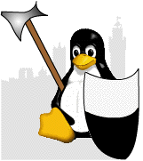
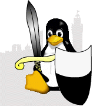
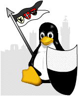
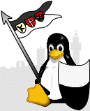

<? 
	include $_SERVER["DOCUMENT_ROOT"]."/inc/slgInit.php";
	
	$pagina = "logocontest";
	$percorso = "/home/logocontest";
	$titolo = "Logo Contest";
	
	include $_SERVER["DOCUMENT_ROOT"]."/inc/slgIncHeader.php";
?>
<table width="100%" border="0" cellpadding="0" cellspacing="0" bgcolor="#FFFFFF" class="tabUnderMenu">
  <tr> 
    <td valign="top" class="backTopBodyLtl"></td>
    <td width="200"><table width="100%" border="0" cellpadding="0" cellspacing="0" class="tabTopBodyDX">
        <tr> 
          <td width="17"></td>
          <td valign="top"></td>
        </tr>
      </table> </td>
  </tr>
  <tr bgcolor="#FFFFFF" class="txtNormal">
    <td valign="top" class="tabBody"> 
      <? tabContentTop($titolo,0); ?>
<TABLE BORDER=0 WIDTH="100%" BGCOLOR="#FFFFFF" ALIGN="center" cellpadding=5 cellspacing=0>
<TR>
<TD></TD><TD>Prima versione del Logo</TD>
</TR>

<TR>
<TD></TD><TD>Qualcuno sosteneva che i pinguini sono animali pacifici?</TD>
</TR>

<TR>
<TD></TD><TD>Ancora pacifismo</TD>
</TR>

<TR>
<TD></TD><TD>Ritocco alla spada</TD>
</TR>

<TR>
<TD></TD><TD>Bandierino con stemma dei 3 terzi</TD>
</TR>

<TR>
<TD align="center"></TD><TD>Versione definitiva ritoccata durante una riunione  nel Maggio 2000</TD>
</TR>


</TABLE>
<BR><BR><TABLE BORDER=0 WIDTH="80%"  ALIGN="center" cellpadding=5 cellspacing=0>
<TR><TD>
<B><CENTER>

</CENTER></B>
</TD></TR>
</TABLE>
      
      
        <? tabContentBtm(); ?>
		<br>
	</td>
    <td width="200" valign="top" class="tabBody"> 
      <? include $_SERVER["DOCUMENT_ROOT"]."/inc/column.php"; ?>
    </td>
  </tr>
</table>
<? include $_SERVER["DOCUMENT_ROOT"]."/inc/slgIncFooter.php"; ?>
